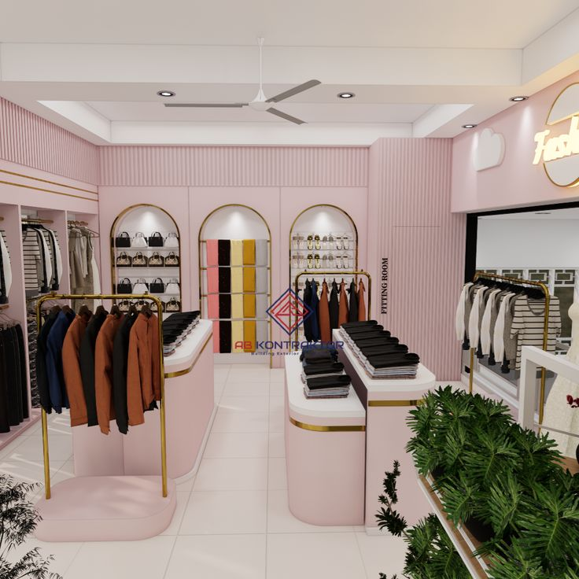

Selamat Datang di Toko Mozation
Mozation adalah sebuah toko modern yang berfokus pada produk fashion dan aksesoris kekinian dengan sentuhan gaya elegan dan warna lembut. Nama “Mozation” berasal dari gabungan kata “Modern Creation”, yang menggambarkan semangat kami untuk menghadirkan desain yang inovatif, modis, dan penuh inspirasi bagi generasi muda yang ingin tampil percaya diri.
